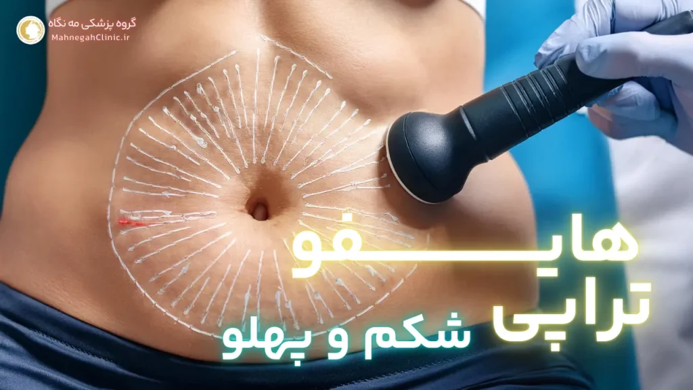

خانه / مجله / لاغری و کاهش وزن
هزینه هایفوتراپی شکم در سعادت آباد چقدر است؟
هایفوتراپی شکم چیست و چگونه عمل میکند؟
اگر 10 درصد تخفیف روی هزینه هایفوتراپی شکم در سعادت آباد میخای اینجا کلیک کن. هایفوتراپی یک روش غیرتهاجمی و نوین در حوزه زیبایی و لاغری است. که با استفاده از امواج اولتراسوند متمرکز با شدت بالا (HIFU) به کاهش چربیهای موضعی و سفت کردن پوست کمک میکند. این روش بدون نیاز به جراحی و بیهوشی، به طور موثری در رفع شلی و افتادگی پوست و کاهش سایز نواحی مختلف بدن، از جمله شکم، پهلو، ران، بازو و غبغب، مورد استفاده قرار میگیرد.
مکانیسم عملکرد هایفوتراپی
در هایفوتراپی، امواج اولتراسوند با شدت بالا به لایههای عمقی پوست نفوذ کرده. و با ایجاد حرارت کنترلشده در بافت چربی، باعث تخریب سلولهای چربی میشوند. این سلولهای چربی تخریبشده سپس به طور طبیعی توسط سیستم لنفاوی بدن دفع میشوند. همچنین، حرارت ایجاد شده توسط هایفوتراپی باعث تحریک تولید کلاژن و الاستین در پوست میشود که به سفت شدن و لیفت پوست کمک میکند.
مزایای هایفوتراپی برای لاغری شکم
- غیرتهاجمی و بدون درد: هایفوتراپی یک روش غیرتهاجمی است که نیازی به جراحی. بیهوشی و دوره نقاهت ندارد و در طول درمان، درد یا ناراحتی قابل توجهی احساس نمیشود.
- کاهش سایز و لاغری موضعی: هایفوتراپی به طور موثری باعث کاهش سایز و لاغری موضعی در ناحیه شکم میشود. و به شما کمک میکند تا به اندامی متناسبتر و خوشفرمتر دست یابید.
- سفت کردن و لیفت پوست: هایفوتراپی علاوه بر کاهش چربی، باعث تحریک تولید کلاژن و الاستین در پوست میشود. که به سفت شدن و لیفت پوست شکم کمک کرده و ظاهری جوانتر و شادابتر به شما میبخشد.
- نتایج ماندگار: نتایج هایفوتراپی در صورت رعایت مراقبتهای پس از درمان و حفظ وزن، میتوانند تا مدتها ماندگار باشند.
- ایمن و موثر: هایفوتراپی یک روش ایمن و موثر برای لاغری و جوانسازی پوست است. که توسط سازمان غذا و داروی آمریکا (FDA) تأیید شده است.
با توجه به مزایای ذکر شده، هایفوتراپی به عنوان یک روش ایمن، موثر و غیرتهاجمی برای لاغری و جوانسازی پوست شکم شناخته میشود. و میتواند به شما در دستیابی به اندامی ایدهآل و افزایش اعتماد به نفس کمک کند.
چرا هایفوتراپی شکم در سعادت آباد؟
سعادت آباد، به عنوان یکی از مناطق لوکس و پرطرفدار تهران، به دلیل تمرکز بالای کلینیکها و مراکز زیبایی مجهز و پیشرفته، به مقصدی محبوب برای افرادی که به دنبال انجام هایفوتراپی شکم هستند، تبدیل شده است. در این منطقه، شما میتوانید از خدمات متخصصان مجرب و با تجربه در زمینه هایفوتراپی بهرهمند شوید. و از نتایج مطلوب و رضایتبخش این روش درمانی لذت ببرید.
مزایای انتخاب سعادت آباد برای هایفوتراپی
- دسترسی آسان: سعادت آباد به دلیل موقعیت جغرافیایی مناسب و دسترسی آسان از طریق وسایل نقلیه عمومی و شخصی، برای بسیاری از ساکنین تهران و حتی شهرهای اطراف، به راحتی قابل دسترس است.
- کلینیکهای مجهز و مدرن: در سعادت آباد، شما میتوانید از بین طیف گستردهای از کلینیکهای زیبایی مجهز و مدرن، کلینیکی را انتخاب کنید. که با نیازها و بودجه شما سازگار باشد. این کلینیکها از جدیدترین دستگاههای هایفوتراپی و تکنولوژیهای روز دنیا بهره میبرند و خدمات با کیفیتی را به مراجعین خود ارائه میدهند.
- متخصصان مجرب و با تجربه: در سعادت آباد، شما میتوانید از خدمات متخصصان پوست و زیبایی مجرب و با تجربه در زمینه هایفوتراپی بهرهمند شوید. این متخصصان با دانش و مهارت خود، بهترین روش درمانی را برای شما انتخاب کرده و در طول درمان، شما را همراهی میکنند.
- محیط آرام و دلنشین: کلینیکهای زیبایی در سعادت آباد، با طراحی داخلی زیبا و محیط آرام و دلنشین، به شما کمک میکنند. تا در طول درمان، احساس راحتی و آرامش داشته باشید و از تجربه هایفوتراپی خود لذت ببرید.
- خدمات پس از فروش: بسیاری از کلینیکهای هایفوتراپی در سعادت آباد، خدمات پس از فروش مناسبی را به مراجعین خود ارائه میدهند. و در صورت بروز هرگونه سوال یا مشکل، شما میتوانید با آنها تماس بگیرید و از راهنماییهای لازم بهرهمند شوید.
کلینیکهای برتر هایفوتراپی در سعادت آباد
در سعادت آباد، کلینیکهای زیبایی متعددی وجود دارند که خدمات هایفوتراپی را با کیفیت بالا و قیمتهای رقابتی ارائه میدهند. برخی از کلینیکهای برتر هایفوتراپی در سعادت آباد عبارتند از:
- گروه پزشکی مه نگاه: این کلینیک با بهرهگیری از کادر پزشکی مجرب و دستگاههای پیشرفته، خدمات هایفوتراپی را با کیفیت بالا و قیمت مناسب ارائه میدهد.
- کلینیک زیبایی طنین: این کلینیک با سابقه طولانی در زمینه خدمات زیبایی و لاغری، یکی از مراکز معتبر و شناختهشده در سعادت آباد است که هایفوتراپی را با استفاده از جدیدترین تکنولوژیها انجام میدهد.
- کلینیک زیبایی ...: این کلینیک با محیطی آرام و دلنشین و کادر پزشکی متخصص، خدمات هایفوتراپی را با تمرکز بر رضایت مشتریان ارائه میدهد.
با انتخاب سعادت آباد برای انجام هایفوتراپی شکم، شما میتوانید از مزایای متعددی بهرهمند شوید. و با اطمینان خاطر، به اندامی متناسب و زیبا دست یابید.
عوامل موثر بر هزینه هایفوتراپی شکم در سعادت آباد
هزینه هایفوتراپی شکم تحت تأثیر عوامل مختلفی قرار میگیرد و میتواند از یک کلینیک به کلینیک دیگر و حتی از یک فرد به فرد دیگر متفاوت باشد. آگاهی از این عوامل به شما کمک میکند تا درک بهتری از قیمت هایفوتراپی شکم داشته باشید و بتوانید بهترین تصمیم را برای خود بگیرید. در ادامه به برخی از مهمترین عوامل موثر بر هزینه هایفوتراپی شکم اشاره میکنیم:
تعداد جلسات مورد نیاز - هزینه هایفوتراپی شکم در سعادت آباد
تعداد جلسات هایفوتراپی مورد نیاز برای هر فرد، به عوامل مختلفی مانند میزان چربی موضعی، وسعت ناحیه تحت درمان، اهداف درمانی و پاسخ بدن به درمان بستگی دارد. به طور کلی، برای دستیابی به نتایج مطلوب، ممکن است به چندین جلسه هایفوتراپی نیاز باشد. هرچه تعداد جلسات مورد نیاز بیشتر باشد، هزینه کلی درمان نیز افزایش مییابد.
ناحیه تحت درمان و وسعت آن
هزینه هایفوتراپی شکم همچنین به وسعت ناحیه تحت درمان بستگی دارد. اگر تنها قصد دارید چربیهای موضعی در یک ناحیه کوچک از شکم را کاهش دهید، هزینه درمان کمتر خواهد بود. اما اگر میخواهید هایفوتراپی را برای کل ناحیه شکم و پهلو انجام دهید، هزینه درمان افزایش مییابد.
علاوه بر این، عوامل دیگری نیز میتوانند بر هزینه هایفوتراپی شکم تأثیر بگذارند، از جمله:
- تجربه و تخصص پزشک: پزشکان با تجربه و متخصص در زمینه هایفوتراپی، ممکن است هزینه بیشتری را برای خدمات خود دریافت کنند.
- نوع دستگاه هایفوتراپی: دستگاههای هایفوتراپی با تکنولوژیهای پیشرفتهتر و قابلیتهای بیشتر، ممکن است هزینه بالاتری داشته باشند.
- موقعیت جغرافیایی کلینیک: هزینه هایفوتراپی در مناطق لوکس و پرطرفدار، مانند سعادت آباد، ممکن است نسبت به سایر مناطق بالاتر باشد.
- تخفیفها و پیشنهادات ویژه: برخی از کلینیکها ممکن است تخفیفها یا پیشنهادات ویژهای را برای هایفوتراپی شکم ارائه دهند.
با در نظر گرفتن این عوامل و مقایسه قیمتها در کلینیکهای مختلف، میتوانید بهترین گزینه را برای انجام هایفوتراپی شکم با توجه به نیازها و بودجه خود انتخاب کنید.

هزینه هایفوتراپی شکم در سعادت آباد
هزینه هایفوتراپی شکم در سعادت آباد، همانند سایر مناطق، تحت تأثیر عوامل مختلفی قرار میگیرد که در بخش قبلی به آنها اشاره کردیم. با این حال، به طور کلی میتوان گفت که هزینه هایفوتراپی شکم در سعادت آباد در محدوده مشخصی قرار دارد که در ادامه به آن میپردازیم.
محدوده قیمت هایفوتراپی شکم
در سعادت آباد، هزینه هایفوتراپی شکم معمولاً بین 2 میلیون تا 5 میلیون متغیر است. این محدوده قیمت میتواند بسته به عوامل مختلفی که قبلاً ذکر شد، مانند تعداد جلسات مورد نیاز، وسعت ناحیه تحت درمان، تجربه پزشک و نوع دستگاه مورد استفاده، تغییر کند.
مقایسه هزینه با سایر روشهای لاغری
در مقایسه با سایر روشهای لاغری، مانند جراحی لیپوساکشن یا ابدومینوپلاستی، هزینه هایفوتراپی شکم به طور قابل توجهی کمتر است. هایفوتراپی یک روش غیرتهاجمی است که نیازی به بیهوشی، برش جراحی و دوره نقاهت طولانی ندارد، بنابراین هزینههای مربوط به بیمارستان، جراحی و مراقبتهای پس از عمل را حذف میکند.
با این حال، مهم است به یاد داشته باشید که هزینه تنها عامل تعیینکننده در انتخاب روش لاغری مناسب نیست. شما باید مزایا، معایب، عوارض جانبی و نتایج هر روش را با دقت بررسی کرده و با پزشک خود مشورت کنید تا بهترین تصمیم را برای خود بگیرید.
در کل، هایفوتراپی شکم در سعادت آباد یک گزینه مقرون به صرفه و موثر برای افرادی است که به دنبال کاهش چربیهای موضعی و سفت کردن پوست شکم خود هستند. با انتخاب یک کلینیک معتبر و پزشک متخصص، میتوانید از نتایج مطلوب و رضایتبخش این روش درمانی بهرهمند شوید.
هایفوتراپی شکم و پهلو: هزینهها و مزایا
هایفوتراپی شکم و پهلو یک روش درمانی محبوب برای افرادی است که به دنبال کاهش چربی و سفت کردن پوست در هر دو ناحیه هستند. این روش درمانی با هدف قرار دادن همزمان شکم و پهلوها، به شما کمک میکند تا به اندامی متناسبتر و خوشفرمتر دست یابید و اعتماد به نفس خود را افزایش دهید.
مزایای ترکیب هایفوتراپی شکم و پهلو
- کاهش چربی و سفت کردن پوست در یک جلسه: با ترکیب هایفوتراپی شکم و پهلو، میتوانید در یک جلسه درمانی، چربیهای موضعی در هر دو ناحیه را کاهش داده و پوست خود را سفت کنید. این کار باعث صرفهجویی در زمان و هزینه شما میشود.
- نتایج یکنواخت و هماهنگ: درمان همزمان شکم و پهلوها به ایجاد نتایج یکنواخت و هماهنگ در کل ناحیه میانی بدن کمک میکند و از ایجاد ناهماهنگی در ظاهر بدن جلوگیری میکند.
- بهبود تناسب اندام: با کاهش چربی و سفت کردن پوست در شکم و پهلوها، تناسب اندام شما بهبود یافته و لباسها بهتر بر روی بدن شما مینشینند.
- افزایش اعتماد به نفس: دستیابی به اندامی متناسب و خوشفرم، اعتماد به نفس شما را افزایش داده و به شما کمک میکند تا در زندگی شخصی و اجتماعی خود موفقتر باشید.
هزینه هایفوتراپی شکم و پهلو در سعادت آباد
هزینه هایفوتراپی شکم و پهلو در سعادت آباد معمولاً کمی بیشتر از هزینه هایفوتراپی تنها شکم است، زیرا ناحیه تحت درمان بزرگتر است و نیاز به زمان و انرژی بیشتری دارد. با این حال، این هزینه همچنان در مقایسه با سایر روشهای لاغری، مانند جراحی، بسیار مقرون به صرفهتر است.
عوامل موثر بر هزینه هایفوتراپی شکم و پهلو:
- تعداد جلسات مورد نیاز
- وسعت ناحیه تحت درمان
- تجربه و تخصص پزشک
- نوع دستگاه هایفوتراپی
- موقعیت جغرافیایی کلینیک
- تخفیفها و پیشنهادات ویژه
با مقایسه قیمتها و مشورت با پزشک، میتوانید بهترین گزینه را برای انجام هایفوتراپی شکم و پهلو در سعادت آباد با توجه به نیازها و بودجه خود انتخاب کنید.

آیا هایفوتراپی شکم برای شما مناسب است؟
هایفوتراپی شکم یک روش موثر و ایمن برای لاغری و جوانسازی پوست است، اما مانند هر روش درمانی دیگری، ممکن است برای همه افراد مناسب نباشد. قبل از تصمیمگیری برای انجام هایفوتراپی شکم، مهم است که با پزشک خود مشورت کنید و مطمئن شوید که این روش برای شما مناسب است و هیچگونه منع مصرفی ندارید.
موارد منع استفاده از هایفوتراپی - هزینه هایفوتراپی شکم در سعادت آباد
- بارداری و شیردهی: هایفوتراپی در دوران بارداری و شیردهی توصیه نمیشود، زیرا اثرات آن بر جنین یا نوزاد هنوز به طور کامل شناخته نشده است.
- بیماریهای پوستی فعال: اگر در ناحیه تحت درمان، بیماریهای پوستی فعال مانند عفونت، التهاب یا زخم باز دارید، هایفوتراپی ممکن است باعث تشدید این مشکلات شود.
- اختلالات خونریزی: اگر اختلالات خونریزی دارید یا داروهای رقیقکننده خون مصرف میکنید، هایفوتراپی ممکن است باعث خونریزی یا کبودی شدید شود.
- بیماریهای قلبی و عروقی: اگر بیماریهای قلبی و عروقی دارید یا از دستگاههای پزشکی مانند ضربانساز قلب استفاده میکنید، هایفوتراپی ممکن است برای شما خطرناک باشد.
- فلزات کاشته شده در بدن: اگر در ناحیه تحت درمان، فلزات کاشته شده مانند پروتز یا ایمپلنت دارید، هایفوتراپی ممکن است باعث گرم شدن بیش از حد این فلزات و آسیب به بافتهای اطراف شود.
مشاوره با پزشک قبل از هایفوتراپی
قبل از انجام هایفوتراپی شکم، حتماً با پزشک خود مشورت کنید و سوابق پزشکی خود را با او در میان بگذارید. پزشک شما میتواند با ارزیابی وضعیت سلامتی شما و بررسی موارد منع مصرف، به شما بگوید که آیا هایفوتراپی برای شما مناسب است یا خیر. همچنین، پزشک میتواند به شما در مورد انتظارات واقعبینانه از نتایج هایفوتراپی و مراقبتهای پس از درمان راهنمایی کند.
با مشورت با پزشک و اطمینان از مناسب بودن هایفوتراپی برای شما، میتوانید با خیال راحت از این روش درمانی برای لاغری و جوانسازی پوست شکم خود استفاده کنید و به نتایج مطلوب دست یابید.

مراقبتهای پس از هایفوتراپی شکم
پس از انجام هایفوتراپی شکم، رعایت برخی مراقبتها و توصیهها میتواند به بهبود سریعتر، کاهش عوارض جانبی احتمالی و دستیابی به نتایج مطلوب کمک کند. در ادامه به برخی از مهمترین مراقبتهای پس از هایفوتراپی شکم اشاره میکنیم:
توصیههای تغذیهای پس از هایفوتراپی - هزینه هایفوتراپی شکم در سعادت آباد
- نوشیدن آب فراوان: نوشیدن آب فراوان به دفع سلولهای چربی تخریبشده و سموم از بدن کمک میکند و فرآیند بهبودی را تسریع میبخشد.
- رژیم غذایی سالم و متعادل: مصرف غذاهای سالم و مغذی، مانند میوهها، سبزیجات، پروتئینهای کمچرب و غلات کامل، به بدن شما انرژی لازم برای بهبودی را میدهد و از افزایش وزن مجدد جلوگیری میکند.
- کاهش مصرف چربی و قند: کاهش مصرف غذاهای چرب و شیرین به حفظ نتایج هایفوتراپی و جلوگیری از تجمع مجدد چربی در ناحیه شکم کمک میکند.
- مصرف فیبر: مصرف فیبر به بهبود عملکرد دستگاه گوارش و دفع مواد زائد کمک میکند و از یبوست جلوگیری میکند.
فعالیتهای بدنی مجاز پس از هایفوتراپی
- پیادهروی: پیادهروی یک فعالیت بدنی سبک و مناسب برای پس از هایفوتراپی است که به بهبود گردش خون و تسریع فرآیند بهبودی کمک میکند.
- شنا: شنا نیز یک فعالیت بدنی کمفشار است که میتواند به تقویت عضلات و بهبود انعطافپذیری بدن کمک کند.
- یوگا و پیلاتس: یوگا و پیلاتس به آرامش ذهن و بدن کمک میکنند و میتوانند به کاهش استرس و بهبود کیفیت خواب کمک کنند.
موارد منع مصرف پس از هایفوتراپی:
- فعالیتهای بدنی شدید: از انجام فعالیتهای بدنی شدید، مانند دویدن، وزنهبرداری یا ورزشهای رزمی، تا چند روز پس از هایفوتراپی خودداری کنید.
- قرار گرفتن در معرض نور خورشید: از قرار گرفتن مستقیم در معرض نور خورشید تا چند روز پس از هایفوتراپی خودداری کنید و در صورت لزوم از کرم ضد آفتاب با SPF بالا استفاده کنید.
- مصرف الکل و دخانیات: مصرف الکل و دخانیات میتواند فرآیند بهبودی را کند کرده و نتایج هایفوتراپی را تحت تأثیر قرار دهد.
با رعایت این مراقبتها و توصیهها، میتوانید از نتایج مطلوب هایفوتراپی شکم خود لذت ببرید و به اندامی متناسب و زیبا دست یابید.
نتایج هایفوتراپی شکم: چه انتظاری داشته باشیم؟
یکی از سوالات رایج در مورد هایفوتراپی شکم این است که چه زمانی میتوان نتایج را مشاهده کرد و این نتایج تا چه مدت ماندگار خواهند بود. در این بخش به این سوالات پاسخ میدهیم و به شما کمک میکنیم تا انتظارات واقعبینانهای از هایفوتراپی شکم داشته باشید.
زمان مشاهده نتایج - هزینه هایفوتراپی شکم در سعادت آباد
نتایج هایفوتراپی شکم معمولاً به تدریج و در طول زمان ظاهر میشوند. برخی از افراد ممکن است بلافاصله پس از درمان، کمی سفت شدن پوست را احساس کنند، اما کاهش قابل توجه چربی و تغییر سایز معمولاً چند هفته تا چند ماه طول میکشد. این به این دلیل است که بدن به زمان نیاز دارد تا سلولهای چربی تخریب شده را به طور طبیعی دفع کند و کلاژن و الاستین جدید تولید کند.
به طور کلی، اکثر افراد میتوانند انتظار داشته باشند که نتایج اولیه هایفوتراپی شکم را در عرض 2 تا 3 ماه پس از درمان مشاهده کنند. با این حال، نتایج نهایی ممکن است تا 6 ماه پس از درمان ادامه یابد.
ماندگاری نتایج هایفوتراپی - هزینه هایفوتراپی شکم در سعادت آباد
ماندگاری نتایج هایفوتراپی شکم به عوامل مختلفی بستگی دارد، از جمله:
- تعداد جلسات درمانی: هرچه تعداد جلسات درمانی بیشتر باشد، نتایج ماندگارتر خواهند بود.
- رعایت مراقبتهای پس از درمان: پیروی از توصیههای پزشک در مورد تغذیه و فعالیت بدنی پس از هایفوتراپی، به حفظ نتایج درمان کمک میکند.
- حفظ وزن: افزایش وزن پس از هایفوتراپی میتواند نتایج درمان را تحت تأثیر قرار دهد. بنابراین، حفظ وزن سالم و پایدار برای ماندگاری نتایج بسیار مهم است.
- سن و شرایط پوست: با افزایش سن، تولید کلاژن و الاستین در پوست کاهش مییابد، بنابراین نتایج هایفوتراپی ممکن است در افراد مسنتر ماندگاری کمتری داشته باشد.
با رعایت این موارد و حفظ سبک زندگی سالم، میتوانید از نتایج هایفوتراپی شکم خود برای مدت طولانیتری لذت ببرید.
در نهایت، هایفوتراپی شکم یک روش موثر برای لاغری و جوانسازی پوست است که میتواند به شما در دستیابی به اندامی متناسب و زیبا کمک کند. با انتخاب یک کلینیک معتبر و پزشک متخصص و رعایت مراقبتهای پس از درمان، میتوانید از نتایج مطلوب و ماندگار این روش درمانی بهرهمند شوید.

پرسش و پاسخ - هزینه هایفوتراپی شکم در سعادت آباد
یک روش غیرتهاجمی برای کاهش چربی و سفت کردن پوست شکم با استفاده از امواج اولتراسوند.
خیر، اکثر افراد در طول درمان درد یا ناراحتی قابل توجهی احساس نمیکنند.
نتایج اولیه معمولاً در عرض 2 تا 3 ماه قابل مشاهده هستند، اما نتایج نهایی ممکن است تا 6 ماه طول بکشد.
نتایج میتوانند طولانی مدت باشند، اما حفظ وزن و سبک زندگی سالم برای ماندگاری آنها ضروری است.
خیر، افرادی با شرایط خاص پزشکی ممکن است کاندید مناسبی برای هایفوتراپی نباشند. بهتر است قبل از درمان با پزشک مشورت کنید.